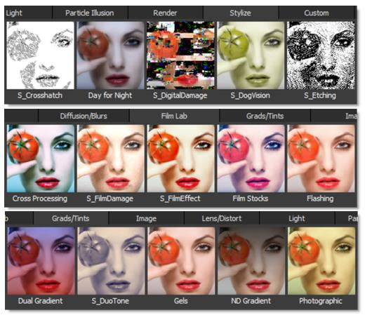
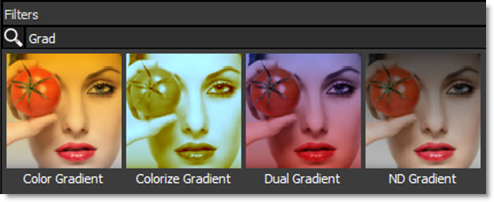

Filters
The Filters window at the bottom of the screen is categorized by filter function and displays a thumbnail for each filter. The following filter categories are listed: Color, Diffusion/Blurs, Film Lab, Grads/Tints, Image, Lens/Distort, Light, Render and Stylize.
You can find detailed information on each filter later in this guide.
Search
To search for filters in the Filters window, click the Search icon at the top left of the Filters window.
Enter text into the search field and related filters will appear.
Disable the Search icon when done to return to the normal Filters window view.
Note: With the mouse in the Filters window, you can press the Enter key to enter search mode, and the Esc key to leave it.
Wrap Filters
Certain filter categories have a lot of filters and depending on the size of the window, there may be a horizontal scroll bar so that you can navigate to any filter not currently shown on the screen. To change to a vertical scroll bar, click the Wrap Filters icon at the far right of the Filters window.